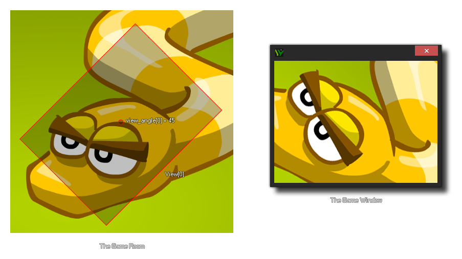

view_angle[0...7]
返回： 实数
有了这个变量，你可以获取（或设置）正在绘制的视野的角度。默认角色是 0º，但是可以设置为-359º 与 359º之间的任意角度。它 不会 影响游戏的玩法，因为它只设置视野 被绘制的角度。经常用于创建旋转的迷你地图，或者视野震动效果。
注意: 这个变量将不适用于HTML5模块和 Windows 8 (JavaScript) 模块。

if shake
{
view_angle[0] = -10 + random(20);
}
else
{
view_angle[0] = 0;
}
上述代码将检测变量“shake”，如果返回true，它将每步改变视野view[0] 角度为-10 至 10 之间的随机值，直到那个“shake”返回 false，此时 view[0] 角度将返回为 0º。